체크리스트(checklist_blind.csv)의 No.와 같은 번호입니다. 판독 시 고해상도 과거 영상(Google Earth Pro, Esri Wayback)을 함께 보세요.
| No. | 2019 | 2025 |
|---|---|---|
| 1 I01377 38.19633, 128.26191 Google 위성 · Esri Wayback | 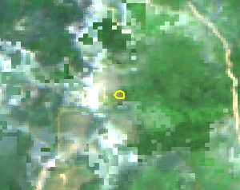 | 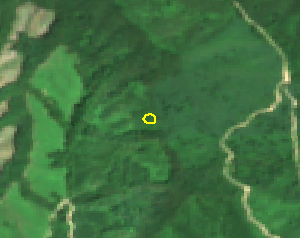 |
| 2 I00785 38.19447, 128.26624 Google 위성 · Esri Wayback | 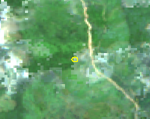 | 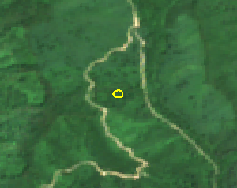 |
| 3 I00084 38.02999, 128.42422 Google 위성 · Esri Wayback | 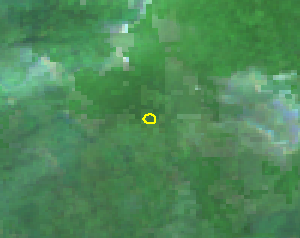 | 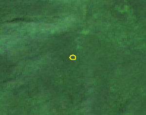 |
| 4 I00907 38.03843, 128.48923 Google 위성 · Esri Wayback | 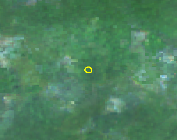 | 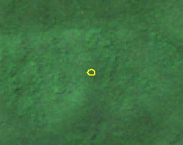 |
| 5 I02079 38.12660, 128.10025 Google 위성 · Esri Wayback | 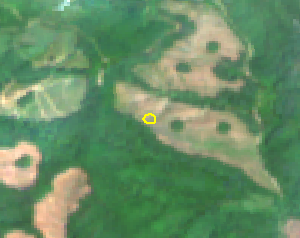 | 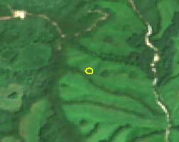 |
| 6 I01621 38.13496, 128.36565 Google 위성 · Esri Wayback | 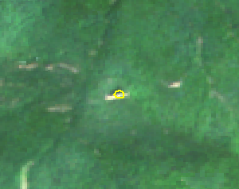 | 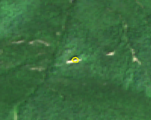 |
| 7 I01017 37.84643, 128.19050 Google 위성 · Esri Wayback | 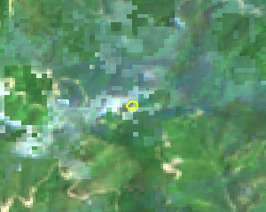 | 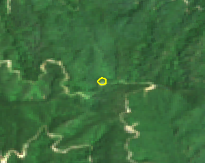 |
| 8 I01847 37.97870, 128.21418 Google 위성 · Esri Wayback | 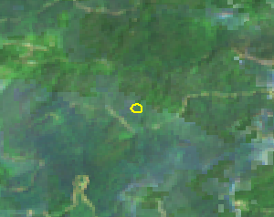 | 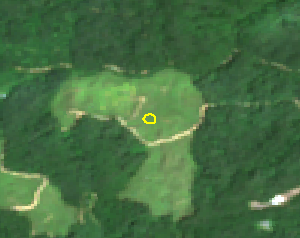 |
| 9 I00556 38.19018, 128.42287 Google 위성 · Esri Wayback | 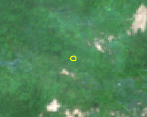 | 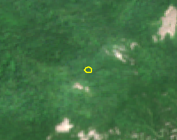 |
| 10 I01783 38.07522, 128.11703 Google 위성 · Esri Wayback | 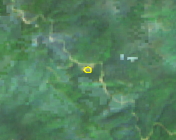 | 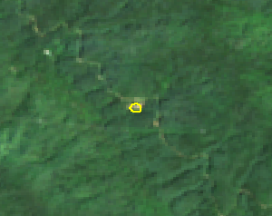 |
| 11 I01608 38.15319, 128.35116 Google 위성 · Esri Wayback | 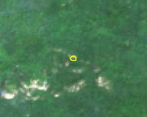 | 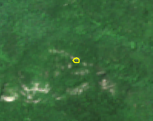 |
| 12 I01683 38.10628, 128.13032 Google 위성 · Esri Wayback | 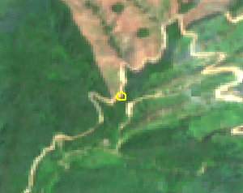 | 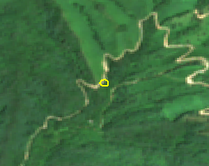 |
| 13 I01020 37.83746, 128.22133 Google 위성 · Esri Wayback | 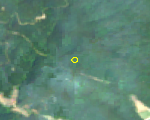 | 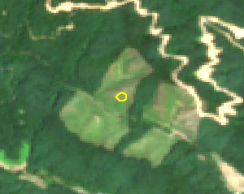 |
| 14 I01603 38.11645, 128.38226 Google 위성 · Esri Wayback | 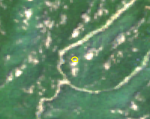 | 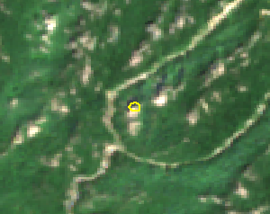 |
| 15 I00698 38.08338, 128.17435 Google 위성 · Esri Wayback | 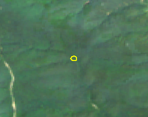 | 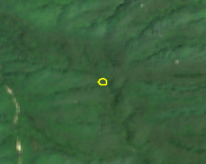 |
| 16 I02031 37.91979, 128.08370 Google 위성 · Esri Wayback | 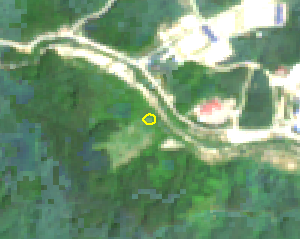 | 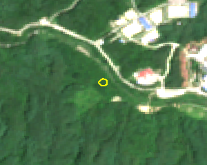 |
| 17 I01577 38.16111, 128.35913 Google 위성 · Esri Wayback | 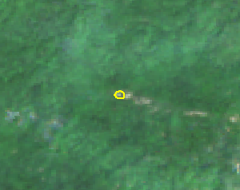 | 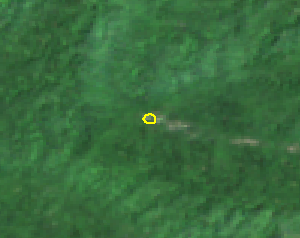 |
| 18 I01400 38.06050, 128.28985 Google 위성 · Esri Wayback | 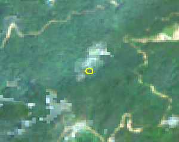 | 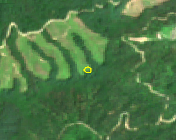 |
| 19 I01743 38.13490, 128.33002 Google 위성 · Esri Wayback | 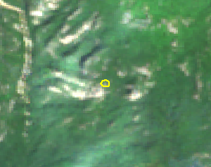 | 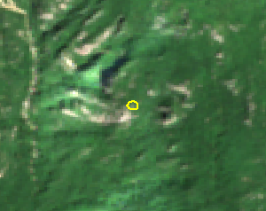 |
| 20 I01707 38.14814, 128.42424 Google 위성 · Esri Wayback | 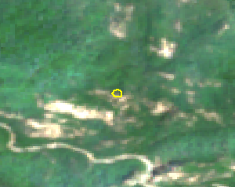 | 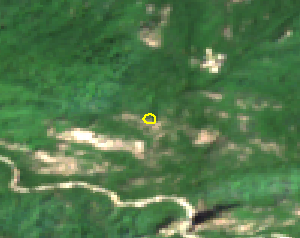 |
| 21 I01005 38.05928, 128.27687 Google 위성 · Esri Wayback | 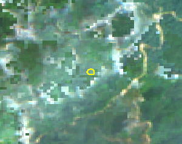 | 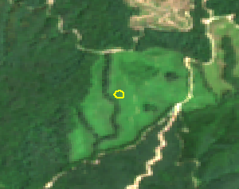 |
| 22 I01061 38.12083, 128.11354 Google 위성 · Esri Wayback | 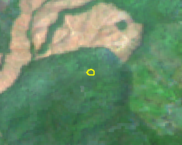 | 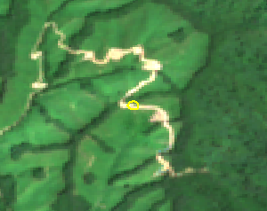 |
| 23 I01703 38.14799, 128.42431 Google 위성 · Esri Wayback | 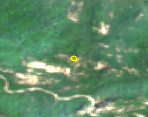 | 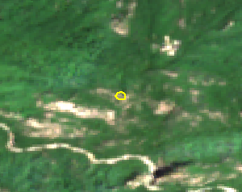 |
| 24 I00542 37.93182, 128.31620 Google 위성 · Esri Wayback | 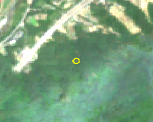 | 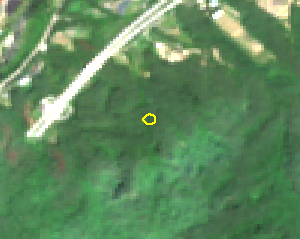 |
| 25 I01515 38.13496, 128.32979 Google 위성 · Esri Wayback | 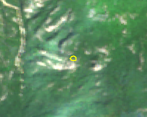 | 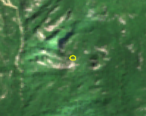 |
| 26 I01702 38.08033, 128.36680 Google 위성 · Esri Wayback | ||
| 27 I01006 38.12192, 128.11406 Google 위성 · Esri Wayback | ||
| 28 I01036 38.16933, 128.10964 Google 위성 · Esri Wayback | ||
| 29 I01948 38.02911, 128.13325 Google 위성 · Esri Wayback | ||
| 30 I01625 38.08063, 128.36692 Google 위성 · Esri Wayback | ||
| 31 I01382 37.92907, 128.22810 Google 위성 · Esri Wayback | ||
| 32 I01034 38.02653, 128.14292 Google 위성 · Esri Wayback | ||
| 33 I00795 38.23944, 128.42734 Google 위성 · Esri Wayback | ||
| 34 I01155 38.12012, 128.11366 Google 위성 · Esri Wayback | ||
| 35 I01309 38.19687, 128.26056 Google 위성 · Esri Wayback | ||
| 36 I01883 38.16453, 128.17903 Google 위성 · Esri Wayback | ||
| 37 I01360 37.85603, 128.23099 Google 위성 · Esri Wayback | ||
| 38 I01746 38.10777, 128.40442 Google 위성 · Esri Wayback | ||
| 39 I01280 38.12300, 128.13520 Google 위성 · Esri Wayback | ||
| 40 I01497 38.12551, 128.11281 Google 위성 · Esri Wayback | ||
| 41 I01322 38.20601, 128.26290 Google 위성 · Esri Wayback | ||
| 42 I02016 37.84792, 128.17818 Google 위성 · Esri Wayback | ||
| 43 I01914 38.02858, 128.13851 Google 위성 · Esri Wayback | ||
| 44 I01187 37.92715, 128.23676 Google 위성 · Esri Wayback | ||
| 45 I01841 38.12902, 128.10207 Google 위성 · Esri Wayback | ||
| 46 I01563 37.89377, 128.36110 Google 위성 · Esri Wayback | ||
| 47 I00060 38.14177, 128.19772 Google 위성 · Esri Wayback | ||
| 48 I01505 38.13334, 128.33572 Google 위성 · Esri Wayback | ||
| 49 I01011 38.11175, 128.12882 Google 위성 · Esri Wayback | ||
| 50 I00213 37.93927, 128.36460 Google 위성 · Esri Wayback | ||
| 51 I01033 37.85191, 128.22670 Google 위성 · Esri Wayback | ||
| 52 I01191 37.87355, 128.17844 Google 위성 · Esri Wayback | ||
| 53 I01652 37.86148, 128.21868 Google 위성 · Esri Wayback | ||
| 54 I00230 37.90332, 128.36554 Google 위성 · Esri Wayback | ||
| 55 I00817 38.14242, 128.10553 Google 위성 · Esri Wayback | ||
| 56 I00504 38.11845, 128.32654 Google 위성 · Esri Wayback | ||
| 57 I00070 37.90168, 128.45253 Google 위성 · Esri Wayback | ||
| 58 I00581 38.14322, 128.30677 Google 위성 · Esri Wayback | ||
| 59 I01095 38.21589, 128.43798 Google 위성 · Esri Wayback | ||
| 60 I01316 38.19442, 128.26237 Google 위성 · Esri Wayback | ||
| 61 I00814 37.87116, 128.37958 Google 위성 · Esri Wayback | ||
| 62 I01555 38.13489, 128.36541 Google 위성 · Esri Wayback | ||
| 63 I02033 38.09956, 128.09648 Google 위성 · Esri Wayback | ||
| 64 I01456 38.11339, 128.13181 Google 위성 · Esri Wayback | ||
| 65 I01425 38.12509, 128.11307 Google 위성 · Esri Wayback | ||
| 66 I00754 38.01527, 128.15858 Google 위성 · Esri Wayback | ||
| 67 I01312 38.10883, 128.14078 Google 위성 · Esri Wayback | ||
| 68 I01372 38.11212, 128.14656 Google 위성 · Esri Wayback | ||
| 69 I01293 37.83896, 128.22185 Google 위성 · Esri Wayback | ||
| 70 I01030 38.02574, 128.14908 Google 위성 · Esri Wayback | ||
| 71 I00147 38.12021, 128.33298 Google 위성 · Esri Wayback | ||
| 72 I02030 38.00050, 128.24711 Google 위성 · Esri Wayback | ||
| 73 I01102 37.83635, 128.19044 Google 위성 · Esri Wayback | ||
| 74 I01492 38.06360, 128.26555 Google 위성 · Esri Wayback | ||
| 75 I01341 37.96204, 128.21607 Google 위성 · Esri Wayback | ||
| 76 I00445 38.07638, 128.20894 Google 위성 · Esri Wayback | ||
| 77 I01266 38.16070, 128.12877 Google 위성 · Esri Wayback | ||
| 78 I01721 38.11638, 128.38212 Google 위성 · Esri Wayback | ||
| 79 I01518 38.14966, 128.30372 Google 위성 · Esri Wayback | ||
| 80 I01041 37.93142, 128.22640 Google 위성 · Esri Wayback | ||
| 81 I00002 37.87629, 128.22085 Google 위성 · Esri Wayback | ||
| 82 I00332 38.02934, 128.21570 Google 위성 · Esri Wayback | ||
| 83 I01919 37.87430, 128.18698 Google 위성 · Esri Wayback | ||
| 84 I01523 38.12452, 128.42069 Google 위성 · Esri Wayback | ||
| 85 I02077 38.12799, 128.10245 Google 위성 · Esri Wayback | ||
| 86 I01959 37.82506, 128.22284 Google 위성 · Esri Wayback | ||
| 87 I01640 38.13511, 128.33591 Google 위성 · Esri Wayback | ||
| 88 I01530 37.89369, 128.36156 Google 위성 · Esri Wayback | ||
| 89 I01855 37.97489, 128.23248 Google 위성 · Esri Wayback | ||
| 90 I01861 37.94034, 128.23528 Google 위성 · Esri Wayback | ||
| 91 I01501 38.13545, 128.33155 Google 위성 · Esri Wayback | ||
| 92 I01615 38.06779, 128.23858 Google 위성 · Esri Wayback | ||
| 93 I01128 37.92576, 128.23819 Google 위성 · Esri Wayback | ||
| 94 I00982 38.00614, 128.17180 Google 위성 · Esri Wayback | ||
| 95 I01982 38.14043, 128.32812 Google 위성 · Esri Wayback | ||
| 96 I00472 38.05394, 128.43729 Google 위성 · Esri Wayback | ||
| 97 I01402 38.12038, 128.10102 Google 위성 · Esri Wayback | ||
| 98 I00317 38.09544, 128.10309 Google 위성 · Esri Wayback | ||
| 99 I01488 38.00102, 128.38623 Google 위성 · Esri Wayback | ||
| 100 I02074 37.97474, 128.23141 Google 위성 · Esri Wayback |